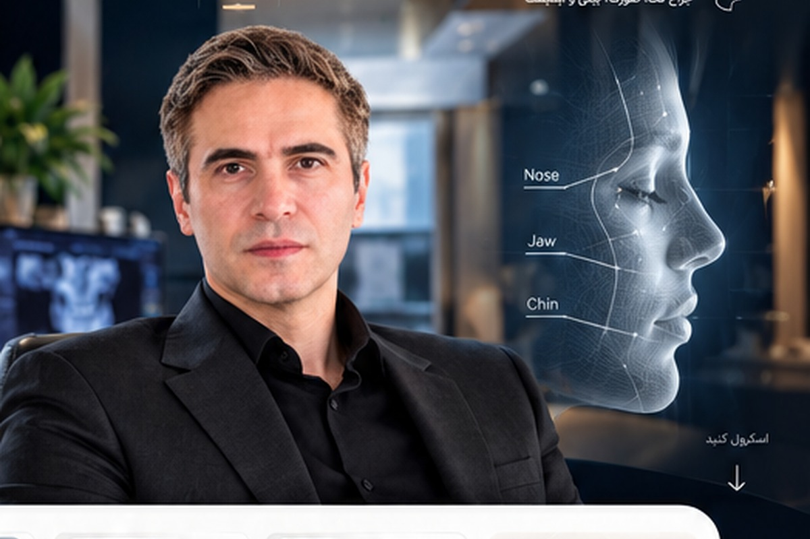

آشنایی
پروفایل پزشک، معرفی و حوزههای تخصصی.
یک تجربه دیجیتال متفاوت برای معرفی پزشک، جراحی فک و صورت، بینی و دندانپزشکی؛ با تمرکز بر اعتماد، آموزش بیمار و مسیر روشن مشاوره.

ویدیوی معرفی در ابتدای تجربه قرار گرفته تا کاربر قبل از دیدن نمونهکارها، با پزشک، رویکرد و مسیر درمان آشنا شود.
پروفایل پزشک در نسخه نهایی از Django مدیریت میشود: معرفی، سوابق، مدارک، حوزههای تخصصی، ویدیوها، مقالات و اطلاعات مطب؛ بدون هاردکد کردن محتوای متغیر در فرانتاند.
هر حوزه در معماری نهایی صفحه مستقل، FAQ، ویدیو، مقالات و کیسهای مخصوص خود را از CMS دریافت میکند.
Before / After باید ابزار مقایسه باشد، نه صرفاً یک گالری. کنترل اسلایدر، توضیح کیس و وضعیت مجوز نمایش در ساختار داده قرار گرفته است.
ساختار صفحه باید اضطراب را با اطلاعات واضح کاهش دهد؛ نه با انیمیشنهای زیاد. مسیر چهارمرحلهای، ستون فقرات UX است.
پروفایل پزشک، معرفی و حوزههای تخصصی.
فرم و مسیر ارتباطی کوتاه و قابل فهم.
راهنمای قبل از عمل و محتوای آموزشی.
مراقبتهای بعد از درمان و ویدیوها.
کتابخانه ویدیو برای معرفی پزشک، قبل از عمل، مراقبت بعد از عمل و پاسخ به پرسشهای پرتکرار.
مقالات طولانی، FAQ، راهنماهای مراقبتی و محتوای سئوپذیر؛ همه از پنل مدیریت قابل انتشار و ویرایش هستند.
آدرس، شماره تماس، ساعات کاری و مختصات واقعی باید از Django Admin خوانده شوند. این نسخه عمداً اطلاعات فرضی را به جای داده واقعی نمایش نمیدهد.
درخواست مشاوره ↗